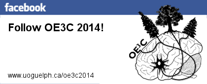

44th Ontario Ecology, Ethology, and Evolution Colloquium
May
8th
to 10th, 2014
University
of Guelph, Guelph, Ontario
Main Page Content
Contact the organizing committee at oe3c2014@gmail.com. You can also sign up for reminders and updates. And, if you'd like, follow us or leave us a note, socially.  |
||
About the OE3C 2014 Team
Sara
Kafashan (Chair & Treasurer)
Sara is in the second year of her PhD in Applied Social Psychology. Sara’s research utilizes an evolutionary framework to investigate, understand, and predict human behaviours. Currently, Sara’s work focuses on understanding various types of interpersonal relationships (e.g., friendships, romantic relationships, work partnerships). Specifically, Sara is investigating (a) if there are similar patterns for partner choice across different long-term relationship types and (b) the role of social support in friendship preference. Jamie Ahloy Dallaire (Web Designer) Jamie is a third year PhD candidate, doing his doctorate in the area of Animal and Poultry Science. Jamie’s research focuses on the evolutionary functions and potential welfare benefits of play, using farmed mink (Neovison vison) as a model species. He is investigating the hypotheses that play prepares juveniles to cope with unexpected or frightening events, and to successfully engage in adult sexual behaviour. Richard Matta (Conference Package Organizer) Richard is in his second year of a Masters program, specializing in Psychology and Collaborative Neuroscience. Currently, Richard is investigating the role of dopamine D1-type receptors in the dorsal hippocampus and social learning of food preferences in male and female mice. Heather Kinkaid (Sponsor Coordinator) Heather, a PhD candidate in the final year of her program in the Animal Science department, is working on a comparative study that asks why some closely-related species might differ intrinsically in their abilities to thrive in captivity. Using parrots (Psittaciformes) as a model, she's testing the hypothesis that certain natural biological traits act as risk (or protective) factors that determine which species are more (or less) likely to exhibit shortened lifespans or problems with breeding or behaviour in different captive environments. Zach Ramsay (Schedule Organizer) Zach is a first-year Master’s candidate interested in evolutionary and comparative approaches to the study of animal behaviour. He is developing a novel learning paradigm using touch-screen equipped operant chambers whereby rats are trained to nose-poke video stimuli of crickets for cricket reward. This contrasts the arbitrary tasks traditionally used by psychologists studying learning in an experimental context. Tony Kess (Social Media Communications) Tony is a second-year PhD candidate in Integrative Biology. He is broadly interested in population genetics, conservation genetics and evolutionary ecology. His research focuses on the role of the genomic structure and population genetic processes in facilitating or inhibiting ecological adaptation, using marine intertidal snails (Littorina saxatilis) as a model. He is using next-generation genetic sequencing tools to map adaptive genes and sites of genetic divergence within the genome to study how genomic organization and gene flow interact during the process of evolution. Kate Eisen (Secretary) Kate is a lab technician in Integrative Biology. Kate is broadly interested in plant evolutionary ecology and global change biology. She is currently applying to ecology and evolutionary biology PhD programs. Kelsy Ervin (Plenary Coordinator) Kelsy is beginning her PhD in Psychology and Neuroscience. Her research aims to determine how estrogens influence social learning in rodents, with a particular focus on how estrogens can act rapidly in the brain to modulate social behaviour. |
||